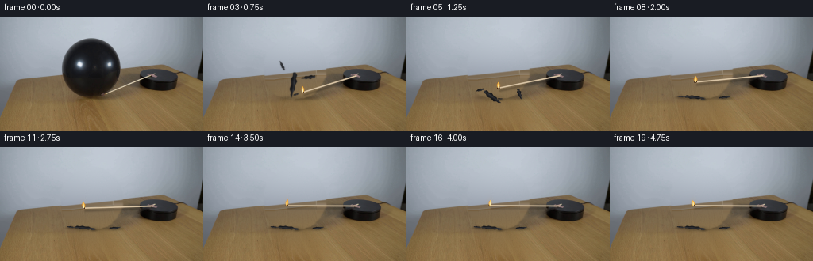
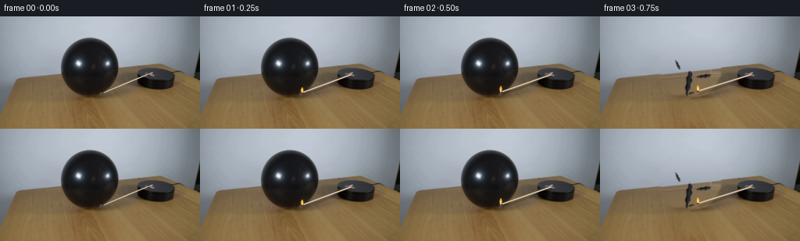
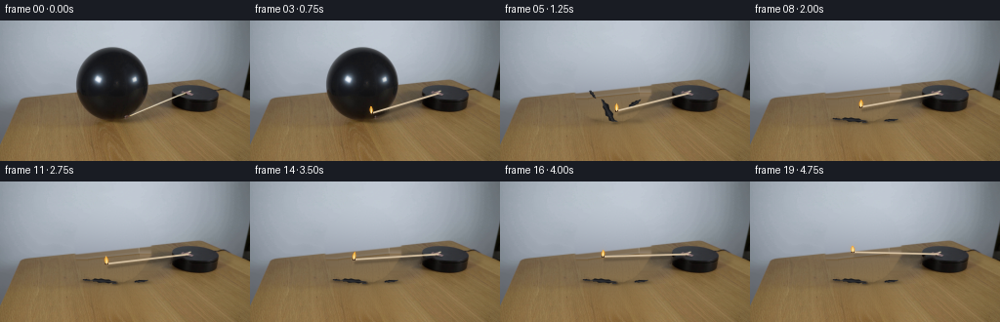
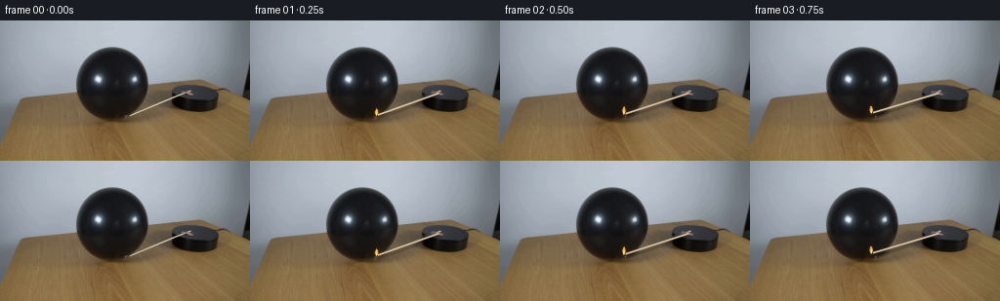

CODING AGENTS AS PIXEL WORLD MODELS
traex/GPT-6.1-Sol · 0112
点击播放 · 原生 RGB 像素
逐轮保存的候选
回放视频、检查图与代码变化。
每份候选均可单独播放。实际图片检查记录在下方工具轨迹中。
候选 01播放与检查图
点击播放 · 原生 RGB 像素


展开代码变化
--- 上一保存版本
+++ 本次保存版本
@@ -0,0 +1,281 @@
+from pathlib import Path
+import numpy as np
+from PIL import Image, ImageDraw, ImageFilter
+import cv2
+from scipy.ndimage import gaussian_filter, map_coordinates
+import artifact_io
+
+ROOT = Path(__file__).resolve().parent
+W, H = 256, 144
+S = 4
+Y, X = np.mgrid[:H, :W].astype(float)
+RNG = np.random.default_rng(112)
+SOURCE = np.array(Image.open(ROOT / 'first_frame.png').convert('RGB'))
+F = SOURCE.astype(float)
+L = F @ np.array([.2126, .7152, .0722])
+
+
+def smoothstep(a, b, x):
+ u = np.clip((x-a)/(b-a), 0, 1)
+ return u*u*(3-2*u)
+
+
+def polyfit_plate(mask, kind):
+ # Fit only the visible, undisturbed surfaces, using low-order illumination.
+ xx = (X-128)/128
+ yy = (Y-75)/75
+ if kind == 'wall':
+ powers = [(i,j) for j in range(3) for i in range(6-j)]
+ else:
+ powers = [(i,j) for j in range(4) for i in range(4-j)]
+ phi = np.stack([xx**i*yy**j for i,j in powers], -1)
+ a = phi[mask]
+ b = F[mask]
+ weight = np.ones(len(b))
+ for _ in range(5):
+ c = np.linalg.lstsq(a*weight[:,None], b*weight[:,None], rcond=None)[0]
+ err = np.sqrt(np.mean((a@c-b)**2,1))
+ weight = np.minimum(1, 5/np.maximum(err, .1))
+ return phi@c
+
+
+# Removing the narrow original shaft leaves the original tabletop and platform
+# intact. The small reddish fixture at the centre is retained as the mounting.
+a = np.array([132.,98.]); b = np.array([191.,74.])
+v = b-a
+u = np.clip(((X-a[0])*v[0]+(Y-a[1])*v[1])/(v@v),0,1)
+d = np.sqrt((X-a[0]-u*v[0])**2+(Y-a[1]-u*v[1])**2)
+shaft_mask = (d<3.2)&(X<189.5)&(X>130)&(Y>73)
+shaft_mask |= (((X-131.5)/3.0)**2+((Y-98)/2.3)**2<1)
+# The mounting remains fixed; the wooden shaft turns around it.
+WITHOUT_MATCH = cv2.inpaint(SOURCE, (shaft_mask*255).astype('uint8'), 4, cv2.INPAINT_TELEA).astype(float)
+
+# Numeric silhouette measurements from the source are used only to restore the
+# background when the balloon bursts, not to introduce an unrelated backdrop.
+left_pts = np.array([[26,113],[28,105],[32,97],[39,89],[48,81],[58,78],[67,77.8],[74,78.5],
+ [81,80],[88,84],[94,89],[98,95],[101,103],[103,113]],float)
+right_pts = np.array([[26,117],[28,125],[32,133],[39,142],[48,148],[58,152],[67,152.8],[74,152],
+ [81,148],[88,144],[94,139],[98,133],[101,125],[103,113]],float)
+left = np.interp(Y[:,0], left_pts[:,0],left_pts[:,1])[:,None]
+right = np.interp(Y[:,0],right_pts[:,0],right_pts[:,1])[:,None]
+balloon_region = (Y>=26)&(Y<=104)&(X>=left)&(X<=right)
+balloon_region = cv2.dilate(balloon_region.astype('uint8'),np.ones((5,5),np.uint8))>0
+balloon_restore = gaussian_filter(balloon_region.astype(float), .85)
+# Directional cast shadow disappears with the inflated body.
+shadow = np.exp(-(((X-(111+.38*(Y-104)))/19)**2+((Y-111)/28)**2)/2)
+shadow *= smoothstep(94,104,Y) * (1-smoothstep(133,146,Y))
+restore_mask = np.maximum(balloon_restore, .87*shadow)
+
+edge = 81.9-.1047*X
+wall_mask = (Y<edge-3)&(Y<65)&(X<238)&~((X>74)&(X<157)&(Y>24))
+wall = polyfit_plate(wall_mask, 'wall')
+wood_mask = (Y>edge+4)&(X>24)&(X<235)
+wood_mask &= ~((X>76)&(X<146)&(Y<137))
+wood_mask &= ~((X>124)&(X<195)&(Y<101))
+wood_mask &= ~((X>172)&(X<225)&(Y<103))
+wood = polyfit_plate(wood_mask,'wood')
+
+# Camera/surface grain is taken from unobstructed parts of this same image.
+blurred = gaussian_filter(F, (1.1,1.1,0))
+grain = F-blurred
+wallgrain = grain[(Y.astype(int)%22)+2,(X.astype(int)+37)%230]
+woodgrain = grain[Y.astype(int),np.clip((X.astype(int)-65),24,78)]
+wall = wall + .75*wallgrain
+wood = wood + .80*woodgrain
+# The rear table edge is mildly defocused in the photograph.
+tablemix = smoothstep(-.6,1.5,Y-edge)
+plate = wall*(1-tablemix[:,:,None])+wood*tablemix[:,:,None]
+CLEAN = WITHOUT_MATCH*(1-restore_mask[:,:,None])+plate*restore_mask[:,:,None]
+
+
+def raster_polygon(points):
+ canvas = Image.new('L',(W*S,H*S),0)
+ dr = ImageDraw.Draw(canvas)
+ dr.polygon([(int(round(x*S)),int(round(y*S))) for x,y in points], fill=255)
+ return np.array(canvas.resize((W,H),Image.Resampling.LANCZOS)).astype(float)/255
+
+
+def blend(image, color, alpha):
+ return image*(1-alpha[:,:,None])+np.asarray(color)*alpha[:,:,None]
+
+
+def match_position(t):
+ # Elliptical projection of a horizontal clockwise rotation. Initially the
+ # free end is just at the lower right edge of the balloon.
+ pivot = np.array([193.4,74.0])
+ projection = .375
+ start = np.arctan2((98.-pivot[1])/projection,132.-pivot[0])
+ radius = np.hypot(132.-pivot[0],(98.-pivot[1])/projection)
+ if t <= .65:
+ turn = np.deg2rad(4.2)*t/.65
+ else:
+ # Smooth continuation of the same clockwise turn, easing to a stop.
+ z = min((t-.65)/3.0,1)
+ turn = np.deg2rad(4.2+43.0*(1-(1-z)**1.7))
+ ang = start+turn
+ tip = pivot+np.array([radius*np.cos(ang), projection*radius*np.sin(ang)])
+ return pivot, tip
+
+
+def draw_match(img,t):
+ pivot, tip = match_position(t)
+ vec = tip-pivot
+ length = np.linalg.norm(vec)
+ e = vec/length
+ # Fine, soft shadow cast by the elevated match, especially on the tabletop.
+ sp = pivot+np.array([1.,2.5]); st=tip+np.array([2.3,3.4])
+ sv=st-sp
+ ss=np.clip(((X-sp[0])*sv[0]+(Y-sp[1])*sv[1])/(sv@sv),0,1)
+ sd=np.sqrt((X-sp[0]-ss*sv[0])**2+(Y-sp[1]-ss*sv[1])**2)
+ alpha=.19*np.exp(-.5*(sd/1.25)**2)
+ alpha *= smoothstep(70,80,Y)
+ img = img*(1-alpha[:,:,None])
+ # Render the cylindrical wood analytically, with supersampled edge coverage.
+ hx=(np.arange(W*S)+.5)/S-.5
+ hy=(np.arange(H*S)+.5)/S-.5
+ xx,yy=np.meshgrid(hx,hy)
+ along=(xx-pivot[0])*e[0]+(yy-pivot[1])*e[1]
+ across=(xx-pivot[0])*(-e[1])+(yy-pivot[1])*e[0]
+ width=.93
+ coverage=np.clip((width-np.abs(across))/.28+.5,0,1)
+ coverage*=np.clip((along-.6)/.4+.5,0,1)*np.clip((length-1.1-along)/.4+.5,0,1)
+ shade=np.sqrt(np.clip(1-(across/width)**2,0,1))
+ # The darker side and tiny longitudinal grain keep it photographic at 256px.
+ woodcolor=np.array([157.,139.,110.])+shade[:,:,None]*np.array([64.,61.,59.])
+ rough = .85*np.sin(along*3.7)+.6*np.sin(along*1.43+across*4.1)
+ woodcolor += rough[:,:,None]
+ lower=woodcolor*coverage[:,:,None]
+ rgb = lower.reshape(H,S,W,S,3).mean((1,3))
+ aa = coverage.reshape(H,S,W,S).mean((1,3))
+ img = img*(1-aa[:,:,None])+rgb
+ # Charred combustible head at the free end.
+ tx=X-tip[0];ty=Y-tip[1]
+ q=((tx*e[0]+ty*e[1])/1.9)**2+((tx*(-e[1])+ty*e[0])/1.1)**2
+ head=np.clip((1-q)*2+.35,0,1)
+ img=blend(img,[54,36,25],head)
+ q2=((tx+.3)/.75)**2+((ty+.25)/.7)**2
+ ember=np.exp(-q2*2)*.7
+ img=blend(img,[212,83,21],ember)
+ # A vertically buoyant flame: warm outer envelope, pale luminous core,
+ # slender flickering tip. This does not rotate like a rigid piece of wood.
+ fh=8.1+.8*np.sin(t*17)+.45*np.cos(t*27)
+ fw=1.6+.14*np.sin(t*23)
+ lean=.7*np.sin(t*13)+.25*np.sin(t*31)
+ height=(tip[1]+.3-Y)/fh
+ cx=tip[0]+lean*height**1.5 if False else tip[0]+lean*np.maximum(height,0)**1.5
+ taper=fw*(.28+1.1*np.sin(np.pi*np.clip(height,0,1)))*np.maximum(1-height,0)**.22
+ taper=np.maximum(taper,.15)
+ inside=(X-cx)/taper
+ env=np.exp(-np.maximum(np.abs(inside)-.55,0)**2*3.8)
+ env*=smoothstep(-.04,.11,height)*(1-smoothstep(.84,1.06,height))
+ env*=.87
+ glow=np.exp(-((X-tip[0]-lean*.3)/3.7)**2-((Y-tip[1]+fh*.40)/6.1)**2)*.07
+ img=blend(img,[244,148,38],glow)
+ colors=np.empty_like(img)
+ hot=np.clip(1-np.abs(inside)*.55-height*.4,0,1)
+ colors[:,:,0]=253
+ colors[:,:,1]=128+122*hot
+ colors[:,:,2]=20+168*hot**1.8
+ img=blend(img,colors,env)
+ # Small white-hot base, never a large illumination/exposure change.
+ core=np.exp(-((X-tip[0])/.6)**2-((Y-tip[1]+2.0)/2.2)**2)*.7
+ img=blend(img,[255,247,208],core)
+ # Almost invisible drifting combustion smoke, restricted to the flame.
+ smoke_y=tip[1]-fh-2
+ smoke_alpha=np.zeros((H,W))
+ for k in range(7):
+ sy=smoke_y-k*2.4
+ sx=tip[0]+lean+.6*np.sin(t*3-k*.55)+k*.13
+ smoke_alpha+=.005*np.exp(-((X-sx)/(1.3+k*.16))**2-((Y-sy)/2.5)**2)
+ img=blend(img,[147,146,141],smoke_alpha)
+ return img
+
+
+# A few coherent pieces of elastic latex, not an expanding cloud or fireball.
+# The large folded remnant recoils to the table; the lighter tears travel farther.
+pieces = [
+ dict(p=(114,88),v=(-10,-22),land=102,size=(25,10),seed=2),
+ dict(p=(130,77),v=(20,-12),land=102,size=(14,6),seed=5),
+ dict(p=(101,60),v=(-15,8),land=101,size=(10,4),seed=8),
+ dict(p=(117,98),v=(2,-7),land=104,size=(6,3),seed=12),
+]
+
+
+def fragment_geometry(pc,tau):
+ x0,y0=pc['p']; vx,vy=pc['v']; gy=150.
+ dtland=(-vy+np.sqrt(vy*vy+2*gy*(pc['land']-y0)))/gy
+ if tau<dtland:
+ x=x0+vx*tau; y=y0+vy*tau+.5*gy*tau*tau
+ air=1
+ spin=pc['seed']*.4+tau*(8+pc['seed']*.22)
+ landing=0
+ else:
+ z=tau-dtland
+ x=x0+vx*dtland+vx*.07*(1-np.exp(-z*8))
+ y=pc['land']-2.4*np.exp(-z*9)*abs(np.sin(z*15))
+ air=np.exp(-z*12)
+ spin=.10*np.sin(pc['seed'])+.6*np.exp(-z*10)
+ landing=1
+ sx,sy=pc['size']
+ # Immediately after rupture the thin rubber contracts, folds and spins.
+ stretch=1+.8*np.exp(-tau*10)
+ sx=sx*stretch
+ sy=sy*(.58+.42*air)
+ return x,y,sx,sy,spin,air,landing
+
+
+def latex_piece(img,pc,tau):
+ x,y,sx,sy,ang,air,land=fragment_geometry(pc,tau)
+ ca,sa=np.cos(ang),np.sin(ang)
+ pts=np.array([[-.52,-.03],[-.42,-.30],[-.27,-.22],[-.17,-.42],
+ [.02,-.25],[.17,-.32],[.27,-.15],[.51,-.09],[.40,.12],
+ [.31,.10],[.18,.33],[-.02,.22],[-.23,.38],[-.35,.18],[-.49,.22]])
+ pts[:,0]*=sx;pts[:,1]*=sy
+ poly=np.column_stack([pts[:,0]*ca-pts[:,1]*sa+x,pts[:,0]*sa+pts[:,1]*ca+y])
+ # The table shadow becomes compact when the piece lands.
+ shadow_y=pc['land']+.8
+ shadowx=x+(shadow_y-y)*.13
+ sh=np.exp(-((X-shadowx)/(sx*.53+1))**2-((Y-shadow_y)/(sy*.25+1))**2)
+ img=img*(1-(.12+.15*(1-air))*sh[:,:,None])
+ mask=raster_polygon(poly)
+ if air>.5:
+ # Small photographic motion smear on the fastest elastic recoils.
+ blur=.25+.6*np.exp(-tau*8)
+ mask=gaussian_filter(mask,blur)
+ ux=(X-x)*ca+(Y-y)*sa
+ uy=-(X-x)*sa+(Y-y)*ca
+ ridge=np.exp(-((uy+.05*sy+.045*ux)/(.1*sy+.4))**2)
+ fold=np.cos(ux*.6+pc['seed'])
+ val=22+ridge*21+fold*3
+ val+=3*np.exp(-((ux+sx*.20)/(sx*.16))**2)
+ rgb=np.stack([val*.94,val*.96,val+2],-1)
+ img=blend(img,rgb,mask)
+ # Thin grey specular ridge on stretched glossy black latex.
+ fine=np.exp(-((uy+.08*sy+.045*ux)/.22)**2)*mask*.17
+ return blend(img,[89,91,94],fine)
+
+
+frames=[SOURCE.copy()]
+for i in range(1,20):
+ t=i/4.
+ pop=.64
+ if t<pop:
+ img=WITHOUT_MATCH.copy()
+ else:
+ tau=t-pop
+ # Inflated balloon vanishes within a single exposure. The existing
+ # cast shadow fades over the brief recoil rather than staying behind.
+ fade=1-np.exp(-tau*18)
+ img=WITHOUT_MATCH*(1-fade)+CLEAN*fade
+ # At the first post-rupture sample the skin is already fully collapsed.
+ img=img*(1-balloon_restore[:,:,None])+CLEAN*balloon_restore[:,:,None]
+ for pc in pieces:
+ img=latex_piece(img,pc,tau)
+ img=draw_match(img,t)
+ frames.append(np.clip(np.rint(img),0,255).astype(np.uint8))
+frames=np.stack(frames)
+assert np.array_equal(frames[0],SOURCE)
+(ROOT/'.tmp').mkdir(exist_ok=True)
+Image.fromarray(np.clip(CLEAN,0,255).astype('uint8')).save(ROOT/'.tmp'/'clean_plate.png')
+artifact_io.save(frames, ROOT)
+print('Saved',frames.shape,frames.dtype)
候选 02播放与检查图
点击播放 · 原生 RGB 像素


展开代码变化
--- 上一保存版本
+++ 本次保存版本
@@ -64,7 +64,10 @@
# Directional cast shadow disappears with the inflated body.
shadow = np.exp(-(((X-(111+.38*(Y-104)))/19)**2+((Y-111)/28)**2)/2)
shadow *= smoothstep(94,104,Y) * (1-smoothstep(133,146,Y))
-restore_mask = np.maximum(balloon_restore, .87*shadow)
+side_shadow = .75*np.exp(-(((X-138)/17)**2+((Y-95)/18)**2)/2)
+side_shadow *= smoothstep(77,86,Y)*(1-smoothstep(118,135,Y))
+side_shadow *= 1-smoothstep(157,174,X)
+restore_mask = np.maximum(balloon_restore, np.maximum(.87*shadow,side_shadow))
edge = 81.9-.1047*X
wall_mask = (Y<edge-3)&(Y<65)&(X<238)&~((X>74)&(X<157)&(Y>24))
@@ -106,12 +109,8 @@
projection = .375
start = np.arctan2((98.-pivot[1])/projection,132.-pivot[0])
radius = np.hypot(132.-pivot[0],(98.-pivot[1])/projection)
- if t <= .65:
- turn = np.deg2rad(4.2)*t/.65
- else:
- # Smooth continuation of the same clockwise turn, easing to a stop.
- z = min((t-.65)/3.0,1)
- turn = np.deg2rad(4.2+43.0*(1-(1-z)**1.7))
+ # A steady rate in real time, with no cut, freeze or speed ramp.
+ turn = np.deg2rad(10.5)*t
ang = start+turn
tip = pivot+np.array([radius*np.cos(ang), projection*radius*np.sin(ang)])
return pivot, tip
@@ -162,7 +161,7 @@
fw=1.6+.14*np.sin(t*23)
lean=.7*np.sin(t*13)+.25*np.sin(t*31)
height=(tip[1]+.3-Y)/fh
- cx=tip[0]+lean*height**1.5 if False else tip[0]+lean*np.maximum(height,0)**1.5
+ cx=tip[0]+lean*np.maximum(height,0)**1.5
taper=fw*(.28+1.1*np.sin(np.pi*np.clip(height,0,1)))*np.maximum(1-height,0)**.22
taper=np.maximum(taper,.15)
inside=(X-cx)/taper
@@ -258,7 +257,7 @@
frames=[SOURCE.copy()]
for i in range(1,20):
t=i/4.
- pop=.64
+ pop=.84
if t<pop:
img=WITHOUT_MATCH.copy()
else:
可观测工具轨迹
实际执行的命令与返回图片。
命令 1exit 0
/bin/bash -lc 'ls -la; cat prompt.txt; cat GENERATION_RULES.md'
命令 2exit 0
/bin/bash -lc "cat artifact_io.py; python - <<'PY'
from PIL import Image
import numpy as np
im=np.array(Image.open('first_frame.png').convert('RGB'))
print(im.shape)
# color ascii luma 4x4
lut=' .,:;ox%#@'
g=(im*np.array([.2126,.7152,.0722])).sum(2)
for y in range(0,144,3):
print(f'{y:3} '+''.join(lut[min(9,int(g[y:y+3,x:x+3].mean()/256*10))] for x in range(0,256,3)))
print('pixel grid every 16px')
for y in range(0,144,8):
print(y,[(x,im[y,x].tolist()) for x in range(0,256,16)])
PY"命令 3exit 0
/bin/bash -lc "python - <<'PY'
from PIL import Image
import numpy as np
im=np.array(Image.open('first_frame.png'))
# print per pixel luminance char for setup right and match
chars=' .,:;ox%#@'
g=im[...,:3]@np.array([.2126,.7152,.0722])
print(' '+''.join(str(x//10%10) for x in range(124,223)))
print(' '+''.join(str(x%10) for x in range(124,223)))
for y in range(60,104):
print(f'{y:3} '+''.join(chars[min(9,int(g[y,x]/256*10))] for x in range(124,223)))
print('hot pixels')
for y,x in np.argwhere((im[:,:,0].astype(float)-im[:,:,2]>40)&(im[:,:,0]>150)):
if x>135 and y<100:print(x,y,im[y,x])
print('colored classification . dark G gray T tan W white R flame')
for y in range(65,100):
row=''
for x in range(125,224):
r,g,b=map(int,im[y,x,:3]);l=(r+g+b)/3
c=' '
if l<25:c='@'
elif l<45:c='#'
elif l<65:c='x'
elif l<85:c=':'
else:c='.'
if r>b+20 and r>70:c='T'
if b>r+10:c='G'
if r>170 and r>b+30:c='R'
row+=c
print(f'{y:3} {row}')
PY"命令 4exit 0
/bin/bash -lc "python - <<'PY'
from PIL import Image
import numpy as np
im=np.array(Image.open('first_frame.png'))[:,:,:3]
for box in [(122,88,145,107),(180,66,207,81)]:
x0,y0,x1,y1=box
print('BOX',box,'red\\n '+''.join(str(x%10) for x in range(x0,x1)))
for y in range(y0,y1):
print(y,' '.join('%3d'%im[y,x,0] for x in range(x0,x1)))
print('rgb prominent')
for y in range(y0,y1):
print(y,[(x,im[y,x].tolist()) for x in range(x0,x1) if im[y,x,0]>155 or (int(im[y,x,0])-int(im[y,x,2])<8 and im[y,x,0]>60)])
PY"命令 5exit 0
/bin/bash -lc "python - <<'PY'
from PIL import Image
import numpy as np
im=np.array(Image.open('first_frame.png'))[:,:,:3]
g=im@np.array([.2126,.7152,.0722]);chars=' .,:;ox%#@'
for y in range(61,103):print(f'{y:3} '+''.join(chars[min(9,int(g[y,x]/256*10))] for x in range(158,256)))
print('balloon dark intervals')
for y in range(20,110):
xs=np.where((g[y]<85)&(np.arange(256)>65)&(np.arange(256)<157))[0]
if len(xs):print(y,xs.min(),xs.max())
PY"命令 6exit 0
/bin/bash -lc "python - <<'PY'
from PIL import Image
import numpy as np
im=np.array(Image.open('first_frame.png')).astype(float)
for x in list(range(0,81,4))+list(range(152,256,4)):
d=im[:,x,0]-im[:,x,2]
ys=np.where(d>10)[0]
print(x,ys[0] if len(ys) else None,' '.join(f'{y}:{tuple(im[y,x].astype(int))}' for y in range(max(0,ys[0]-1),min(144,ys[0]+3))) if len(ys) else '')
PY"命令 7exit 0
/bin/bash -lc "python - <<'PY'
import importlib.util
for s in ['cv2','scipy','numpy','PIL']:print(s,importlib.util.find_spec(s) is not None)
from PIL import Image
import numpy as np
im=np.array(Image.open('first_frame.png'))
chars=' .,:;ox%#@'
g=im[:,:,:3]@np.array([.2126,.7152,.0722])
for y in range(88,144):print(f'{y:3} '+''.join(chars[min(9,int(g[y,x]/256*10))] for x in range(80,145)))
PY"命令 8exit 0
/bin/bash -lc "cat > generate.py <<'PY'
from pathlib import Path
import numpy as np
from PIL import Image, ImageDraw, ImageFilter
import cv2
from scipy.ndimage import gaussian_filter, map_coordinates
import artifact_io
ROOT = Path(__file__).resolve().parent
W, H = 256, 144
S = 4
Y, X = np.mgrid[:H, :W].astype(float)
RNG = np.random.default_rng(112)
SOURCE = np.array(Image.open(ROOT / 'first_frame.png').convert('RGB'))
F = SOURCE.astype(float)
L = F @ np.array([.2126, .7152, .0722])
def smoothstep(a, b, x):
u = np.clip((x-a)/(b-a), 0, 1)
return u*u*(3-2*u)
def polyfit_plate(mask, kind):
# Fit only the visible, undisturbed surfaces, using low-order illumination.
xx = (X-128)/128
yy = (Y-75)/75
if kind == 'wall':
powers = [(i,j) for j in range(3) for i in range(6-j)]
else:
powers = [(i,j) for j in range(4) for i in range(4-j)]
phi = np.stack([xx**i*yy**j for i,j in powers], -1)
a = phi[mask]
b = F[mask]
weight = np.ones(len(b))
for _ in range(5):
c = np.linalg.lstsq(a*weight[:,None], b*weight[:,None], rcond=None)[0]
err = np.sqrt(np.mean((a@c-b)**2,1))
weight = np.minimum(1, 5/np.maximum(err, .1))
return phi@c
# Removing the narrow original shaft leaves the original tabletop and platform
# intact. The small reddish fixture at the centre is retained as the mounting.
a = np.array([132.,98.]); b = np.array([191.,74.])
v = b-a
u = np.clip(((X-a[0])*v[0]+(Y-a[1])*v[1])/(v@v),0,1)
d = np.sqrt((X-a[0]-u*v[0])**2+(Y-a[1]-u*v[1])**2)
shaft_mask = (d<3.2)&(X<189.5)&(X>130)&(Y>73)
shaft_mask |= (((X-131.5)/3.0)**2+((Y-98)/2.3)**2<1)
# The mounting remains fixed; the wooden shaft turns around it.
WITHOUT_MATCH = cv2.inpaint(SOURCE, (shaft_mask*255).astype('uint8'), 4, cv2.INPAINT_TELEA).astype(float)
# Numeric silhouette measurements from the source are used only to restore the
# background when the balloon bursts, not to introduce an unrelated backdrop.
left_pts = np.array([[26,113],[28,105],[32,97],[39,89],[48,81],[58,78],[67,77.8],[74,78.5],
[81,80],[88,84],[94,89],[98,95],[101,103],[103,113]],float)
right_pts = np.array([[26,117],[28,125],[32,133],[39,142],[48,148],[58,152],[67,152.8],[74,152],
[81,148],[88,144],[94,139],[98,133],[101,125],[103,113]],float)
left = np.interp(Y[:,0], left_pts[:,0],left_pts[:,1])[:,None]
right = np.interp(Y[:,0],right_pts[:,0],right_pts[:,1])[:,None]
balloon_region = (Y>=26)&(Y<=104)&(X>=left)&(X<=right)
balloon_region = cv2.dilate(balloon_region.astype('uint8'),np.ones((5,5),np.uint8))>0
balloon_restore = gaussian_filter(balloon_region.astype(float), .85)
# Directional cast shadow disappears with the inflated body.
shadow = np.exp(-(((X-(111+.38*(Y-104)))/19)**2+((Y-111)/28)**2)/2)
shadow *= smoothstep(94,104,Y) * (1-smoothstep(133,146,Y))
restore_mask = np.maximum(balloon_restore, .87*shadow)
edge = 81.9-.1047*X
wall_mask = (Y<edge-3)&(Y<65)&(X<238)&~((X>74)&(X<157)&(Y>24))
wall = polyfit_plate(wall_mask, 'wall')
wood_mask = (Y>edge+4)&(X>24)&(X<235)
wood_mask &= ~((X>76)&(X<146)&(Y<137))
wood_mask &= ~((X>124)&(X<195)&(Y<101))
wood_mask &= ~((X>172)&(X<225)&(Y<103))
wood = polyfit_plate(wood_mask,'wood')
# Camera/surface grain is taken from unobstructed parts of this same image.
blurred = gaussian_filter(F, (1.1,1.1,0))
grain = F-blurred
wallgrain = grain[(Y.astype(int)%22)+2,(X.astype(int)+37)%230]
woodgrain = grain[Y.astype(int),np.clip((X.astype(int)-65),24,78)]
wall = wall + .75*wallgrain
wood = wood + .80*woodgrain
# The rear table edge is mildly defocused in the photograph.
tablemix = smoothstep(-.6,1.5,Y-edge)
plate = wall*(1-tablemix[:,:,None])+wood*tablemix[:,:,None]
CLEAN = WITHOUT_MATCH*(1-restore_mask[:,:,None])+plate*restore_mask[:,:,None]
def raster_polygon(points):
canvas = Image.new('L',(W*S,H*S),0)
dr = ImageDraw.Draw(canvas)
dr.polygon([(int(round(x*S)),int(round(y*S))) for x,y in points], fill=255)
return np.array(canvas.resize((W,H),Image.Resampling.LANCZOS)).astype(float)/255
def blend(image, color, alpha):
return image*(1-alpha[:,:,None])+np.asarray(color)*alpha[:,:,None]
def match_position(t):
# Elliptical projection of a horizontal clockwise rotation. Initially the
# free end is just at the lower right edge of the balloon.
pivot = np.array([193.4,74.0])
projection = .375
start = np.arctan2((98.-pivot[1])/projection,132.-pivot[0])
radius = np.hypot(132.-pivot[0],(98.-pivot[1])/projection)
if t <= .65:
turn = np.deg2rad(4.2)*t/.65
else:
# Smooth continuation of the same clockwise turn, easing to a stop.
z = min((t-.65)/3.0,1)
turn = np.deg2rad(4.2+43.0*(1-(1-z)**1.7))
ang = start+turn
tip = pivot+np.array([radius*np.cos(ang), projection*radius*np.sin(ang)])
return pivot, tip
def draw_match(img,t):
pivot, tip = match_position(t)
vec = tip-pivot
length = np.linalg.norm(vec)
e = vec/length
# Fine, soft shadow cast by the elevated match, especially on the tabletop.
sp = pivot+np.array([1.,2.5]); st=tip+np.array([2.3,3.4])
sv=st-sp
ss=np.clip(((X-sp[0])*sv[0]+(Y-sp[1])*sv[1])/(sv@sv),0,1)
sd=np.sqrt((X-sp[0]-ss*sv[0])**2+(Y-sp[1]-ss*sv[1])**2)
alpha=.19*np.exp(-.5*(sd/1.25)**2)
alpha *= smoothstep(70,80,Y)
img = img*(1-alpha[:,:,None])
# Render the cylindrical wood analytically, with supersampled edge coverage.
hx=(np.arange(W*S)+.5)/S-.5
hy=(np.arange(H*S)+.5)/S-.5
xx,yy=np.meshgrid(hx,hy)
along=(xx-pivot[0])*e[0]+(yy-pivot[1])*e[1]
across=(xx-pivot[0])*(-e[1])+(yy-pivot[1])*e[0]
width=.93
coverage=np.clip((width-np.abs(across))/.28+.5,0,1)
coverage*=np.clip((along-.6)/.4+.5,0,1)*np.clip((length-1.1-along)/.4+.5,0,1)
shade=np.sqrt(np.clip(1-(across/width)**2,0,1))
# The darker side and tiny longitudinal grain keep it photographic at 256px.
woodcolor=np.array([157.,139.,110.])+shade[:,:,None]*np.array([64.,61.,59.])
rough = .85*np.sin(along*3.7)+.6*np.sin(along*1.43+across*4.1)
woodcolor += rough[:,:,None]
lower=woodcolor*coverage[:,:,None]
rgb = lower.reshape(H,S,W,S,3).mean((1,3))
aa = coverage.reshape(H,S,W,S).mean((1,3))
img = img*(1-aa[:,:,None])+rgb
# Charred combustible head at the free end.
tx=X-tip[0];ty=Y-tip[1]
q=((tx*e[0]+ty*e[1])/1.9)**2+((tx*(-e[1])+ty*e[0])/1.1)**2
head=np.clip((1-q)*2+.35,0,1)
img=blend(img,[54,36,25],head)
q2=((tx+.3)/.75)**2+((ty+.25)/.7)**2
ember=np.exp(-q2*2)*.7
img=blend(img,[212,83,21],ember)
# A vertically buoyant flame: warm outer envelope, pale luminous core,
# slender flickering tip. This does not rotate like a rigid piece of wood.
fh=8.1+.8*np.sin(t*17)+.45*np.cos(t*27)
fw=1.6+.14*np.sin(t*23)
lean=.7*np.sin(t*13)+.25*np.sin(t*31)
height=(tip[1]+.3-Y)/fh
cx=tip[0]+lean*height**1.5 if False else tip[0]+lean*np.maximum(height,0)**1.5
taper=fw*(.28+1.1*np.sin(np.pi*np.clip(height,0,1)))*np.maximum(1-height,0)**.22
taper=np.maximum(taper,.15)
inside=(X-cx)/taper
env=np.exp(-np.maximum(np.abs(inside)-.55,0)**2*3.8)
env*=smoothstep(-.04,.11,height)*(1-smoothstep(.84,1.06,height))
env*=.87
glow=np.exp(-((X-tip[0]-lean*.3)/3.7)**2-((Y-tip[1]+fh*.40)/6.1)**2)*.07
img=blend(img,[244,148,38],glow)
colors=np.empty_like(img)
hot=np.clip(1-np.abs(inside)*.55-height*.4,0,1)
colors[:,:,0]=253
colors[:,:,1]=128+122*hot
colors[:,:,2]=20+168*hot**1.8
img=blend(img,colors,env)
# Small white-hot base, never a large illumination/exposure change.
core=np.exp(-((X-tip[0])/.6)**2-((Y-tip[1]+2.0)/2.2)**2)*.7
img=blend(img,[255,247,208],core)
# Almost invisible drifting combustion smoke, restricted to the flame.
smoke_y=tip[1]-fh-2
smoke_alpha=np.zeros((H,W))
for k in range(7):
sy=smoke_y-k*2.4
sx=tip[0]+lean+.6*np.sin(t*3-k*.55)+k*.13
smoke_alpha+=.005*np.exp(-((X-sx)/(1.3+k*.16))**2-((Y-sy)/2.5)**2)
img=blend(img,[147,146,141],smoke_alpha)
return img
# A few coherent pieces of elastic latex, not an expanding cloud or fireball.
# The large folded remnant recoils to the table; the lighter tears travel farther.
pieces = [
dict(p=(114,88),v=(-10,-22),land=102,size=(25,10),seed=2),
dict(p=(130,77),v=(20,-12),land=102,size=(14,6),seed=5),
dict(p=(101,60),v=(-15,8),land=101,size=(10,4),seed=8),
dict(p=(117,98),v=(2,-7),land=104,size=(6,3),seed=12),
]
def fragment_geometry(pc,tau):
x0,y0=pc['p']; vx,vy=pc['v']; gy=150.
dtland=(-vy+np.sqrt(vy*vy+2*gy*(pc['land']-y0)))/gy
if tau<dtland:
x=x0+vx*tau; y=y0+vy*tau+.5*gy*tau*tau
air=1
spin=pc['seed']*.4+tau*(8+pc['seed']*.22)
landing=0
else:
z=tau-dtland
x=x0+vx*dtland+vx*.07*(1-np.exp(-z*8))
y=pc['land']-2.4*np.exp(-z*9)*abs(np.sin(z*15))
air=np.exp(-z*12)
spin=.10*np.sin(pc['seed'])+.6*np.exp(-z*10)
landing=1
sx,sy=pc['size']
# Immediately after rupture the thin rubber contracts, folds and spins.
stretch=1+.8*np.exp(-tau*10)
sx=sx*stretch
sy=sy*(.58+.42*air)
return x,y,sx,sy,spin,air,landing
def latex_piece(img,pc,tau):
x,y,sx,sy,ang,air,land=fragment_geometry(pc,tau)
ca,sa=np.cos(ang),np.sin(ang)
pts=np.array([[-.52,-.03],[-.42,-.30],[-.27,-.22],[-.17,-.42],
[.02,-.25],[.17,-.32],[.27,-.15],[.51,-.09],[.40,.12],
[.31,.10],[.18,.33],[-.02,.22],[-.23,.38],[-.35,.18],[-.49,.22]])
pts[:,0]*=sx;pts[:,1]*=sy
poly=np.column_stack([pts[:,0]*ca-pts[:,1]*sa+x,pts[:,0]*sa+pts[:,1]*ca+y])
# The table shadow becomes compact when the piece lands.
shadow_y=pc['land']+.8
shadowx=x+(shadow_y-y)*.13
sh=np.exp(-((X-shadowx)/(sx*.53+1))**2-((Y-shadow_y)/(sy*.25+1))**2)
img=img*(1-(.12+.15*(1-air))*sh[:,:,None])
mask=raster_polygon(poly)
if air>.5:
# Small photographic motion smear on the fastest elastic recoils.
blur=.25+.6*np.exp(-tau*8)
mask=gaussian_filter(mask,blur)
ux=(X-x)*ca+(Y-y)*sa
uy=-(X-x)*sa+(Y-y)*ca
ridge=np.exp(-((uy+.05*sy+.045*ux)/(.1*sy+.4))**2)
fold=np.cos(ux*.6+pc['seed'])
val=22+ridge*21+fold*3
val+=3*np.exp(-((ux+sx*.20)/(sx*.16))**2)
rgb=np.stack([val*.94,val*.96,val+2],-1)
img=blend(img,rgb,mask)
# Thin grey specular ridge on stretched glossy black latex.
fine=np.exp(-((uy+.08*sy+.045*ux)/.22)**2)*mask*.17
return blend(img,[89,91,94],fine)
frames=[SOURCE.copy()]
for i in range(1,20):
t=i/4.
pop=.64
if t<pop:
img=WITHOUT_MATCH.copy()
else:
tau=t-pop
# Inflated balloon vanishes within a single exposure. The existing
# cast shadow fades over the brief recoil rather than staying behind.
fade=1-np.exp(-tau*18)
img=WITHOUT_MATCH*(1-fade)+CLEAN*fade
# At the first post-rupture sample the skin is already fully collapsed.
img=img*(1-balloon_restore[:,:,None])+CLEAN*balloon_restore[:,:,None]
for pc in pieces:
img=latex_piece(img,pc,tau)
img=draw_match(img,t)
frames.append(np.clip(np.rint(img),0,255).astype(np.uint8))
frames=np.stack(frames)
assert np.array_equal(frames[0],SOURCE)
(ROOT/'.tmp').mkdir(exist_ok=True)
Image.fromarray(np.clip(CLEAN,0,255).astype('uint8')).save(ROOT/'.tmp'/'clean_plate.png')
artifact_io.save(frames, ROOT)
print('Saved',frames.shape,frames.dtype)
PY
python generate.py"命令 9exit 0
/bin/bash -lc "python - <<'PY'
from PIL import Image
import numpy as np
chars=' .,:;ox%#@'
for num in [0,1,2,3,4,6,9,14,19]:
a=np.array(Image.open(f'frames/{num:02d}.png'))
g=a@np.array([.2126,.7152,.0722])
print('\\nFRAME',num)
for y in range(18,112,2): print(f'{y:3} '+''.join(chars[min(9,int(g[y:y+2,x:x+2].mean()/256*10))] for x in range(72,224,2)))
print('wall restoration boundary residuals')
a=np.array(Image.open('frames/19.png')).astype(float)
for y in [25,30,40,50,60,65,70,75,80,85,90,95,100,105]:
print(y,[(x,a[y,x].astype(int).tolist()) for x in [73,78,82,90,100,110,120,130,140,150,155,160]])
PY"命令 10exit 0
/bin/bash -lc "python - <<'PY'
p='generate.py'
s=open(p).read()
s=s.replace(\" if t <= .65:\\n turn = np.deg2rad(4.2)*t/.65\\n else:\\n # Smooth continuation of the same clockwise turn, easing to a stop.\\n z = min((t-.65)/3.0,1)\\n turn = np.deg2rad(4.2+43.0*(1-(1-z)**1.7))\", \" # A steady rate in real time, with no cut, freeze or speed ramp.\\n turn = np.deg2rad(10.5)*t\")
s=s.replace(\" cx=tip[0]+lean*height**1.5 if False else tip[0]+lean*np.maximum(height,0)**1.5\", \" cx=tip[0]+lean*np.maximum(height,0)**1.5\")
s=s.replace(' pop=.64',' pop=.84')
# restore the softer diffuse edge of the balloon shadow alongside the body
s=s.replace(\"restore_mask = np.maximum(balloon_restore, .87*shadow)\", \"side_shadow = .75*np.exp(-(((X-138)/17)**2+((Y-95)/18)**2)/2)\\nside_shadow *= smoothstep(77,86,Y)*(1-smoothstep(118,135,Y))\\nside_shadow *= 1-smoothstep(157,174,X)\\nrestore_mask = np.maximum(balloon_restore, np.maximum(.87*shadow,side_shadow))\")
open(p,'w').write(s)
PY
python generate.py
python - <<'PY'
from PIL import Image
import numpy as np
p=np.load('pixels.npz')['pixels']
f=np.array(Image.open('first_frame.png').convert('RGB')).astype(np.uint32)
a=(f[:,:,0]<<16)|(f[:,:,1]<<8)|f[:,:,2]
print('Shape:',p.shape,'Initial identical:',np.array_equal(p[:,:,0],a))
print('Frame count:',len(list(__import__('pathlib').Path('frames').glob('*.png'))))
for i in [1,2,3,4,5,19]:
im=np.array(Image.open('frames/%02d.png'%i)); orig=np.array(Image.open('first_frame.png').convert('RGB'))
d=abs(im.astype(int)-orig.astype(int))
print(i,'changed:',np.count_nonzero(np.any(d>0,2)), 'background MAD',d[:20].mean(),'balloon avg',im[35:78,90:143].mean())
PY"保存候选 2 份；完成命令 10 次；可验证图片返回 0 张。原始 API 响应与完整日志保留在本地。